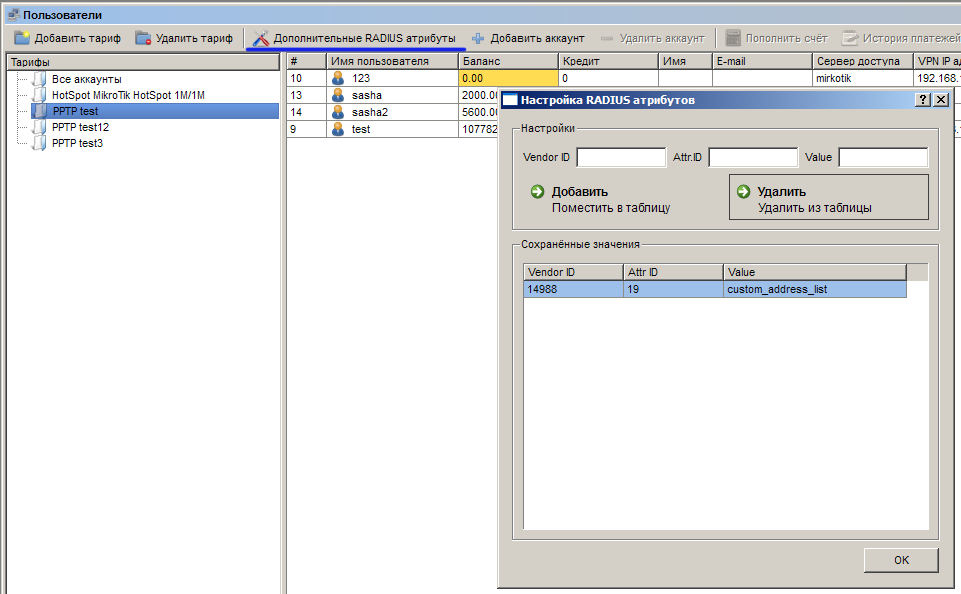

|
Особая конфигурация RADIUS атрибутов |
Top Previous Next |
|
Начиная с версии 1.2 в ExpertBilling появилась возможность указывать дополнительные RADIUS атрибуты. Для требуется выбрать уже созданный тарифный план и на панели инстурментов кликнуть кнопку "Дополнительные RADIUS атррибуты"
 Настройка дополнительных RADIUS аттрибутов для тарифного плана
Обратите внимание: RADIUS атрибуты, которые будут здесь указаны, должны быть перечислены в одном из RADIUS словарей в папке dicts/ биллинг-системы. Список всех используемых словарей указывается в секции [radius] файла ebs_config.ini в опции dict_list. При указании новых словарей требуется перезапуск демона rad. После перезапуска проверьте лог-файл rad_log на предмет отсутствия ошибок.
Обратите внимание: в поле Attr ID необходимо указывать идентификатор атрибута, а не его буквенное представление
This help file was created with an unregistered evaluation copy of Help & Manual. © EC Software. All rights reserved. This message will not appear if you compile this help file with the registered version of Help & Manual. |